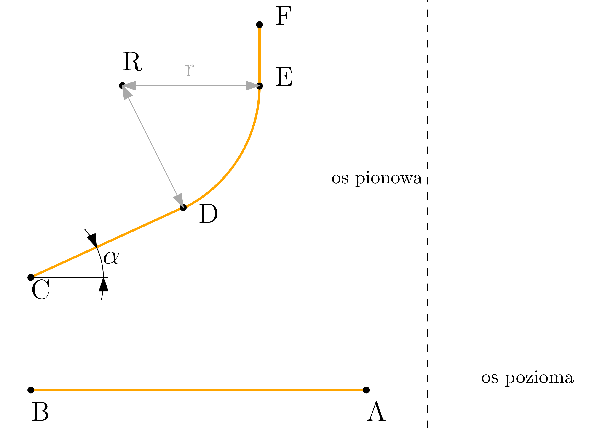
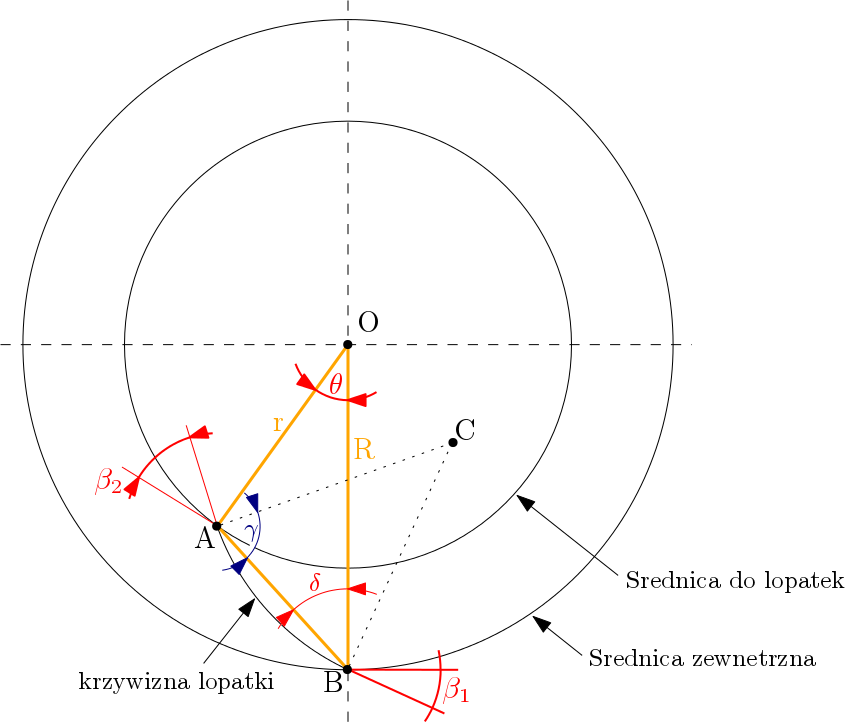
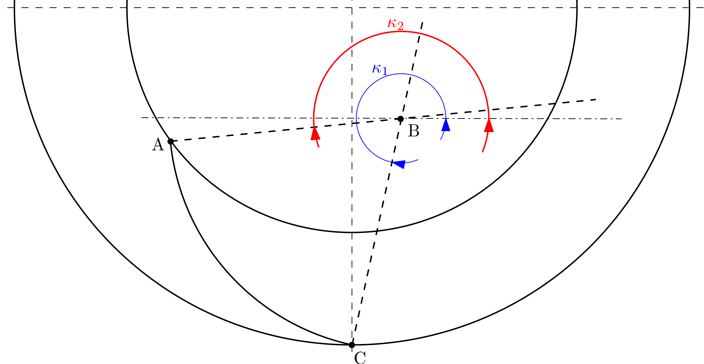

objectGeometry.py¶
W niniejszym pliku zawarte zostały wszystkie funkcje które zostały użyte w celu określenia położenia poszczególnych punktów wirnika. Podczas tej procedury wykorzystany został moduł SymPy.
-
objectGeometry.obliczWymaganeParametry(Goniec)¶ Funkcja mająca na celu określenie położenia punktów głównych wirnika. Są to między innymi punkty określające przekrój poprzeczny wirnika, zakrzywienie łopatki, oraz zaokrąglenie w górnej części konstrukcji.
Parametry: Goniec (Sender) – obiekt Gońca zawierający informacje wymagane w przygotowaniu analizy numerycznej.
-
objectGeometry.wspolrzednePktPrzekroju(geometria, temp)¶ Funkcja służąca do obliczenia niezbędnych wymiarów wirnika. Na poniższym rysunku został przedstawiony przekrój wirnika i punkty określające jego wymiary.
Szkic przekroju wirnika
Punkty te odpowiadają następującym wymiarowm pobranym z GUI:
- Promień otworu - odl. od osi pionowej do punktu A
- Promień zewnętrzny - odl. od osi pionowej do punktu B
- Promień u wylotu - odl. od osi pion
- Wysokość łopatki - odcinek \(|BC|\)
- Kąt alfa - kąt \(\alpha\)
- Promień zaokrąglenia - odcinek \(|RD|=|RE|\)
- Wysokość pod naddatek - odcinek \(|EF|\)
- Wysokość wirnika - odległość od punktu F do osi poziomej.
W celu stworzenia geometrii w programie GMSH należy obliczyć położenie punktu \(D\). Punkt ten jest określane poprzez sprawdzenie punktów wspólnych okręglu zakreślonego w punkcie \(R\) o promieniu \(|RD|\) z prostą przechodzącą przez punkt \(C\) odchyloną od poziomu o kąt \(\alpha\). Zadanie to zostało wykonane przy użyciu modułu SymPy.
Parametry: - geometria (Geometry) – obiekt klasy Geometry zawierający dane geometryczne wirnika
- temp (dictionary) – tymczasowy kontener na dane, użyty w celu przechowywania informacji.
Return temp: uaktualniony kontener na dane.
{kind=link}
-
objectGeometry.obliczPunktyKrzywej(geometria)¶ Funkcja obliczająca wspołrzędne punktów A, B, C łopatki. Algorytm wykorzystuje funckcję fsolve z modułu SciPy w celu rozwiązania równania nieliniowego przedstawionego poniżej. W oparciu o współrzędne wymienionych punktów funkcja
dodajWspolrzedne()oblicza osiem punktów leżących na krzywiźnie łopatki.Szkic wirnika w płaszczyźnie XY
W celu określenia współrzędnej punktu \(A\) należy wpierw określić kąt \(\theta\). Kąt można określić następującą zależnością:
\[\begin{split}\delta = \arctan(\tfrac{r-sin\theta}{R-rsin\theta}) \\ \gamma = \delta + {\beta}_{1} \\ \gamma + {\beta}_{2} + \theta + \delta = 180^{\circ} \implies {\beta}_{1} + {\beta}_{2} + \theta + 2\cdot\delta = 180^{\circ}\end{split}\]\[{\beta}_{1} + {\beta}_{2} + \theta + 2\arctan(\tfrac{r-sin\theta}{R-rsin\theta}) - 180^{\circ} = 0\]Parametry: geometria (Geometry) – obiekt klasy Geometry zawierający dane geometryczne wirnika Return pktyLopatki: tablica zawierająca punkty znajdujące się na krzywej łopatki.
{kind=link}
-
objectGeometry.dodajWspolrzedne(wek)¶ Funkcja zawiera opis krzywizny łopatki we współrzędnych parametrycznych. W pierwszym etapie zostają wyznaczone kąty \({\kappa}_{1}\) i \({\kappa}_{2}\). Następnie tworzona jest tablica zawierająca osiem równoodległych wartości z pomiędzy tych kątów. Tak otrzymane dane zostają użyte przy określaniu punktów leżących na krzywej \(AC\).
Szkic krzywizny łopatki
Parametry: wek (lista zawierająca współrzędne punktów na krzywiźnie łopatki) – tablica zawierająca położenie punktów \(A\), \(B\) i \(C\).
{kind=link}
-
objectGeometry.policzPktyZaokraglenia(geometria, temp)¶ Funkcja ma na celu obliczenie punktów na krzywej wirnika w górnej jego części (zob. krzywą \(ED\) na rysunku przekroju wirnika). Procedura obliczania punktów na krzywej jest identyczna jak w przypadku funkcji
dodajWspolrzedne().Parametry: - geometria (Geometry) – obiekt klasy Geometry zawierający dane geometryczne wirnika
- temp (dictionary) – tymczasowy kontener na dane, użyty w celu przechowywania informacji.
Return kolo_BC: obiekt list zawierający punkty leżące na zaokrągleniu w górnej części wirnika.